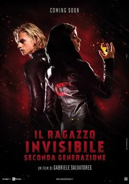

The genetics
The film's powers are hereditary, and genetics is part of the villain's plan. Yelena belongs to the first generation of Specials, and her children Michele and Natasha to the second, inheriting powers from their parents. In the past, Zavarov tortured Specials in experiments to discover the origin of their powers, which turned Yelena against ordinary people. Now her doctor, Doctor KA, an ordinary man who sides with the Specials, gives her transfusions of her children's blood and combines their DNA in a machine called UTERO to restore her strength and that of her allies, so that she can carry out a massacre. The film presents both the oligarch's experiments and Yelena's use of her children's DNA as abuses, against which Michele chooses trust between Specials and ordinary people. Combining two people's DNA to recharge a third person's powers has no counterpart in real biology.
How genetics is portrayed
- Overall portrayal of genetics
- negative Research on the Specials' inherited powers is the work of a torturer and then of a terrorist and her doctor; the film's hope lies in trust between people, not in the science.
- Outcome of the genetic intervention
- negative Experiments on Specials caused torture and death, and the DNA procedure empowers Yelena for a planned massacre that is stopped only at the cost of both parents' lives.
- Yelena
- villain Aim: ideological, revenge, power (negative). She has her children's blood and DNA used to restore her strength and her allies' so that she can blow up the pipeline and much of Trieste, asserting Special supremacy. The film reveals her as a manipulative murderer who dies in the climax.
- Doctor KA
- villain Aim: ideological (negative). The doctor performs the transfusions and combines the children's DNA in the UTERO machine to empower Yelena for her attack. He is presented as having treated the Specials with respect but becomes complicit in her plan.
- Igor Zavarov
- villain Aim: curiosity, power (negative). In the backstory the oligarch tortured Specials in experiments to discover the origin of their powers, causing a death that sparked Yelena's rebellion. The film presents him as a cruel enemy of the Specials.
The story
Three years after the first film, Michele, a teenager in Trieste who can become invisible, has lost his adoptive mother in a car accident, and Stella, whose memories of their adventure were erased, is with another boy. A new classmate, Natasha, abducts him and takes him to Yelena, who reveals that she is their mother and that Natasha is his sister. Yelena, one of the first generation of Specials, people with powers, needs her children's blood to keep up her strength. She says the Russian oligarch Igor Zavarov, who tortured Specials in experiments to discover the origin of their powers, has kidnapped their father Andrej, and enlists Michele in a plan to seize Zavarov at the opening of his gas pipeline. In fact she means to blow up the pipeline and much of the city, in a bid for Special supremacy over ordinary humans, and she killed Michele's adoptive mother. Michele frees Andrej and stops her; both parents die, and the siblings are left together.